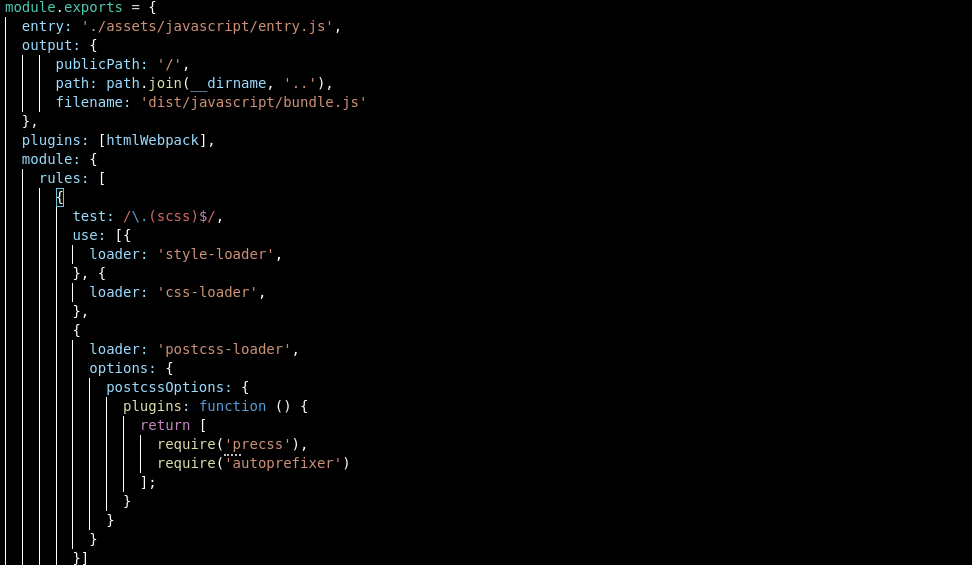
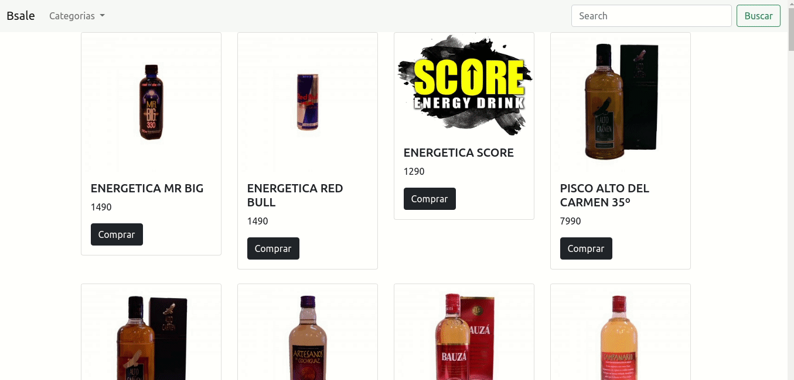
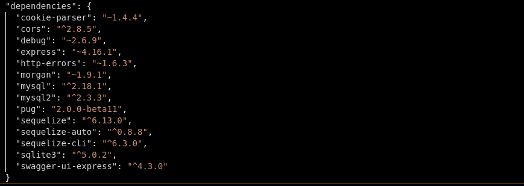
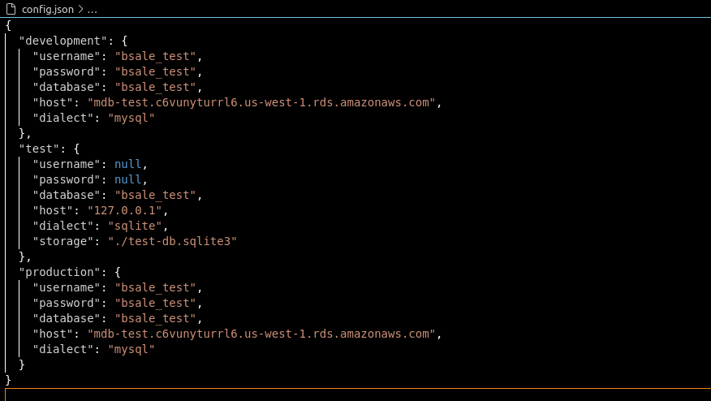
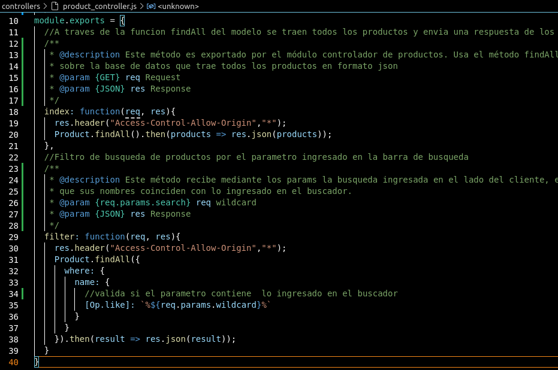
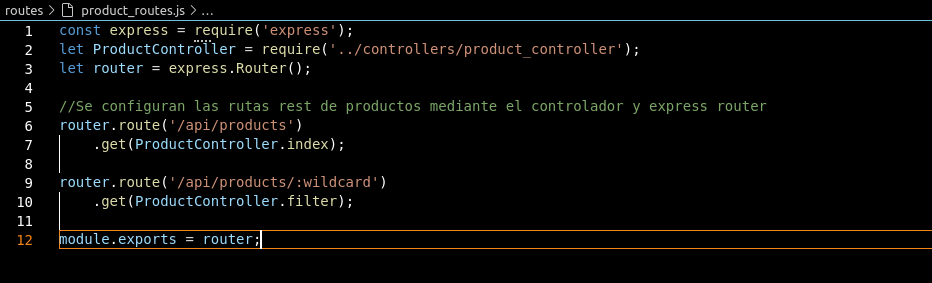
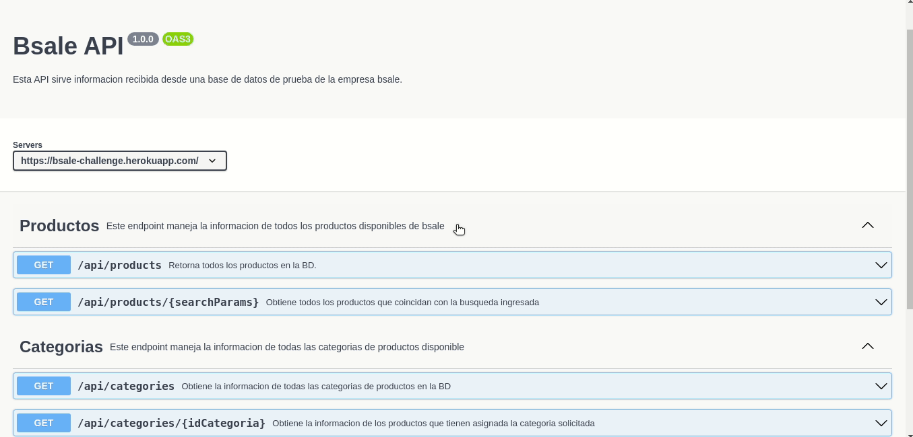
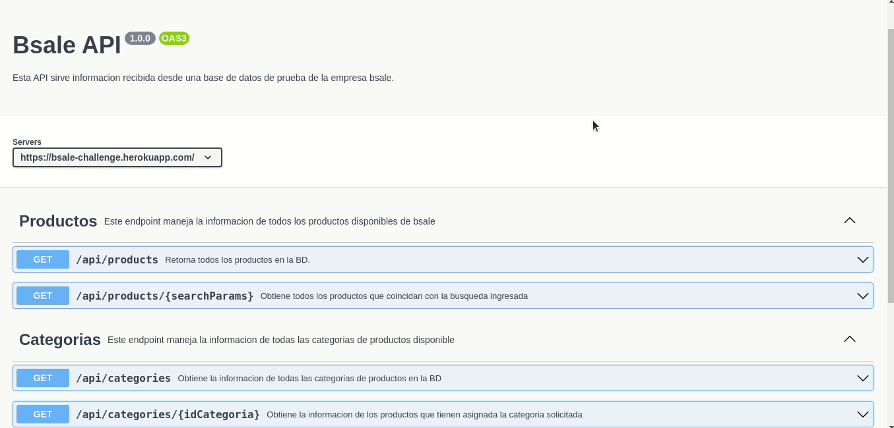

BSALE CHALLENGE
Introducción
El presente proyecto está desarrollado en una arquitectura cliente/servidor API REST. Su creación tiene como objetivo ser parte de un desafío de selección para formar parte del equipo de desarrolladores de la empresa "bsale". A continuación podrás revisar la documentación de dicho proyecto y además podŕas revisar en detalle las funciones principales en la navegacion al costado derecho de este parrafo.
Contexto
En primer lugar, se solicita conectar la base de datos entregada a una aplicación backend construida en un framework de elección basado en arquitectura REST, con el fin de servir los datos alojados en la nube de dicha BD. En segundo lugar, se debe construir el cliente/frontend en javascript vanilla para consumir dicha API RESTful. Además, se requiere crear un buscador que retorne las busquedas filtradas desde el servidor, entre otros requerimientos para simular una tienda virtual.
Solución
En respuesta a lo solicitado y considerando que estamos ubicados en la capa, decidí usar el siguiente stack de desarrollo: Para el backend el framework de node expressJS, para gestionar la base de datos sequelizeJS (ORM). En cuanto a el frontend, lo siguiente: webpack, bootstrap, sass/css, javascript vanilla. A continuación revisaremos en detalle frontend y backend
Frontend
Entorno de desarrollo (pre-requisitos)
- Node JS v16.13.1
- Webpack v5.66.0
Stack
- Javascript vanilla
- Bootstrap v5.1.3
- Css/Sass
Dependencias
Instalación local
1- Ingresar o posicionar tu terminal en la caperta raíz del proyecto
2- Ejecutaremos npm install para instalar las dependencias de node_modules
3- Ejecutamos npm run dev para ejecutar el webpack server en http://localhost:3000
Webpack
Webpack es una herramienta que realiza multiples funciones, además de servir la aplicación en el entorno de desarrollo, su principal función es empaquetar, minimizar y exportar los archivos del proyecto para su correcta funcionalidad en producción. A continuación revisaremos la configuración usada en el proyecto:
Configuración general:
Testing
Para asegurar de que todo funcione de manera correcta, realice testing manual sobre las principales funcionalidades. Puedes revisar la función mecionada en cada feature en detalle a traves de la barra lateral
Feature 1
Descripción: Agregar un buscador, el cual tiene que estar implementado a nivel de servidor, mediante una Api Rest.
Resultado esperado: Se espera que al ingresar el nombre de un producto, se devuelvan las coincidencias.
Resultado obtenido: La barra de busqueda retorna correctamente las coincidencias mediante el boton y la escucha del evento del teclado. Para evitar realizar multiples peticiones al servidor por cada tecla presionada, la función que lo realiza tiene un delay de 1000ms y un limpiador de intervalos.
Función utilizada: searchProduct()
Feature 2
Descripción: Implementar filtros por atributo.
Resultado esperado: Se espera mostrar las categorias disponibles y que al seleccionar una categoria, se devuelvan todos los productos que pertenecen a dicha categoria.
Resultado obtenido: La selección multiple carga correctamente los nombres de las categorias son obtenidos desde la API REST. Además, al seleccionar una categoria, también trae los productos asociados.
Función utilizada: setFilter()
Deploy
Para gestionar el deploy en firebase, segui las instrucciones del sitio oficial que podrán revisar en la sección wiki de la documentación.
Requerido: Instalar Firebase: npm install -g firebase npm install -g firebase-tools
Iniciar sesión en firebase: firebase login
Integrar firebase al proyecto: firebase init
Ejecutar deploy: firebase deploy --only hosting
Url del proyecto: https://bsale-client-594e1.web.app/
Wiki
Integrar bootstrap en webpack: https://getbootstrap.com/docs/4.0/getting-started/webpack/
Integrar Firebase al proyecto: https://firebase.google.com/docs/hosting/quickstart?hl=es
Backend
Entorno de desarrollo (pre-requisitos)
- Node JS v16.13.1
- Mysql v2.18.1
Stack
- Express v4.16.4
- Sequelize ORM v6.13.0
- Heroku v7.59.1
API DOC
- Swagger
- jsDoc
Dependencias
Instalación local
1- Ingresar o posicionar tu terminal en la caperta raíz del proyecto
2- Ejecutaremos npm install para instalar las dependencias de node_modules
3- Ejecutamos npm run dev para ejecutar el webpack server en [http://localhost:8080]
Express y Sequelize ORM
La parte primordial en este desafío según mi percepción fue conectar la base de datos, contruir los modelos para manipular la información con los estándares de encapsulamiento adecuados. Por este motivo decidí trabajar con Express y Sequelize, programar del lado del servidor con javascript y gestionar con un ORM la base de datos. Entonces, lo primero fue crear una app con express --view=pug myapp. Esta linea de comando genera un esquema básico de una app servida con Express. Traer los modelos de la base de datos existentes fue todo un desafío, pero finalmente usando la api sequelize-auto extraje los modelos con el siguiente comando:
sequelize-auto -h
La línea de comandos anterior da como resultado al carpeta models con los archivos configurados con sequelize, solo hace falta iniciar la configuración con sequelize init. Esta ultima instrucción genera la conexión a la base de datos en un archivo index.js dentro de la carpeta models y además genera un objeto JSON para registrar la configuración de la base de datos como se aprecia a continuación:
Una vez configurada la base de datos, pude empezar a manipular la información mediante los metodos que entrega sequelize a través de sus modelos. Cabe destacar que al trabajar con un ORM tenemos la ventaja de poder trabajar con distintos motores de base de datos, en este caso para la base de datos de prueba configuramos con el motor de sequelize. Para continuar construí los controladores, aquí podemos pareciar un ejemplo del controlador del modelo product:
Una vez configurado el controlador, configuramos la ruta con el objeto router de Express, que nos ofrece la posibilidad de configurar endpoints para nuestra API RESTful. Para esre caso en particular no fue necesario generar la configuración de peticiones POST,PUTS o DELETE ya que solo se requiere de momento hacer peticiones GET. A continuación las rutas del modelo product
Finalmente, debemos importar e ingresar las rutas a la configuración de nuestro servidor en el archivo app.js.
¡Y ya está! tenemos nuestra API RESTful configurada.
ENDPOINTS
Para entregar una información clara sobre los endpoints que maneja la API y, siguiendo el estandar de buenas practicas realicé la documentación con la herramienta swagger, que a su vez nos ofrece los schemas y un entorno de pruebas para validar que las respuestas se esten recibiendo de forma correcta. En el siguiente enlace, puedes revisarlo:
https://bsale-challenge.herokuapp.com/api-docs/Testing
Feature 1
Descripción: Gestionar un request mediante swagger al endpoint /api/products
Resultado esperado: Retorna un JSON con todos los productos contenido en la BD
Resultado obtenido: Retorna un array de objetos JSON con todos los productos
method: GET
Feature 2
Descripción: Gestionar un request mediante swagger al endpoint /api/products/{searchParams}
Resultado esperado: Retorna un JSON con los productos que en su nombre hagan match con el search params
Parametro ingresado: mr big
Resultado obtenido:
[ { "id": 5, "name": "ENERGETICA MR BIG", "url_image": "https://dojiw2m9tvv09.cloudfront.net/11132/product/misterbig3308256.jpg", "price": 1490, "discount": 20, "category": 1 } ]
method: GET
Deploy
Asegurate de tener instalado el cliente de Heroku antes de ejecutar las instrucciones de deploy:
heroku login heroku create git push heroku master
Url del proyecto: https://bsale-challenge.herokuapp.com/api-docs/
WIKI
Express-generator docu https://expressjs.com/es/starter/generator.html
Como usar Sequelize-auto https://www.npmjs.com/package/sequelize-auto
Deploy en Heroku https://devcenter.heroku.com/articles/getting-started-with-nodejs#set-up
Autor
Conclusiones
Durante el desarrollo de este proyecto me sorprendí del portencial de sequelize a la hora de integrar bases de datos existentes, pensé que tardaría más generar los modelos de forma manual, pero por el contrario fue muy sencillo de realizar. También me fue impresindible contar con herramientas como swagger y jsdoc, la curva de aprendizaje no es tan elevada y la ayuda para acortar los tiempos de trabajo es mucha. Definitivamente si hay algo nuevo que me llevo de esta experiencia, son las habilidades para comenzar a documentar de forma correcta mis proyectos personales y de hobby.